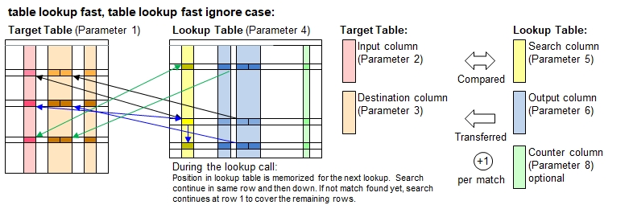

Function Names
table lookup fast, table lookup fast ignore caseDescription
This function works very similarly like table lookup top down(), with the only difference that the row number, where the match has been found,
will be memorized. Further lookups with the same lookup parameters will find the same matching row. However, if there is no match, then
the lookup continues with the next row below. Once it has reached the end of the table, it make a 2nd round to look at the rows above
the memorized row number. You will see some deviating behavior as illustrated below:

This feature provides signficant performance improvements if your target table and your lookup table are already sorted in alphabetic
order. Example: You have one sorted list (e.g. last name, first name) containing empoloyees of a business. The 2nd list contains a list
of employees deserving a promotion or pay rise. Both lists are already sorted by names. You want to look up for details like mailing addresses
from the 1st list. In this case, the 1st list is the lookup table and the 2nd list is the target table. with alphabetic ordering in place,
the lookup procedure will run very swiftly, practially with one single pass in the target table and one single pass in the lookup table.
Call as: procedure or function
Restrictions
Indirect parameter passing is disabled
Parameter count
6 - 8 (For parameter description and return values: see table lookup() )
Examples
table load( lookup, "Examples/Table Lookup Example 1.csv" );
table initialize( target, { Town, New York, New York, Florence, New York, New York, Munich, New York } );
count[] = table lookup fast( target, Town, { Food or Beverage, Recommended },
lookup, City, { Meal or Drink, Recommendation }, true, Counter );
echo("Lookup table:");
table list( lookup );
// Note: Querying New York after Florence looks for next match afer Florence and is a beer.
echo("Target table after lookup (", count[], " items found):");
table list( target );
Output
Lookup table:
0 : City | Meal or Drink | Recommendation | Counter
1 : Hamburg | Meal | Hering |
2 : Hamburg | Meal | Seafood |
3 : New York | Meal | Pizza | 3
4 : New York | Meal | Hamburger |
5 : Florence | Drink | Chianti | 1
6 : Florence | Meal | Tagliatelli |
7 : Edinburgh | Drink | Single Malt |
8 : Edinburgh | Meal | Fish & Chips |
9 : New York | Drink | Lager | 2
10 : Plzen | Drink | Pils |
11 : Munich | Meal | Pork | 1
12 : Munich | Drink | Weissbier |
Target table after lookup (7 items found):
0 : Town | Food or Beverage | Recommended
1 : New York | Meal | Pizza
2 : New York | Meal | Pizza
3 : Florence | Drink | Chianti
4 : New York | Drink | Lager
5 : New York | Drink | Lager
6 : Munich | Meal | Pork
7 : New York | Meal | Pizza
See also
table lookup
table lookup top down
table lookup once
table lookup smart
table lookup smart once
table integrate
table expand